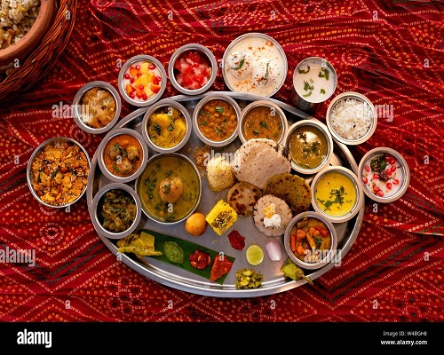

| Gujarati Thali |
|
|

|
1. Roti: |
Ingredients |
Instructions |
- 2 cups wheat flour
- Water (as needed)
- Salt (to taste)
|
-
Mix the wheat flour, salt, and water to form a soft
dough.
-
Divide the dough into small balls and roll them into
flat, round rotis.
-
Cook the rotis on a hot griddle until they puff up and
are cooked through.
|
2. Gujarati Dal: |
Ingredients |
Instructions |
- 1 cup split pigeon peas (toor dal)
- 1 small onion (finely chopped)
- 1 small tomato (chopped)
- 1 tsp ginger-garlic paste
- 1/2 tsp turmeric powder
- 1 tsp red chili powder
- Salt (to taste)
- Fresh coriander leaves (for garnish)
|
- Boil the toor dal until soft.
-
In a separate pan, sauté onions, tomatoes, ginger-garlic
paste.
-
Add turmeric, red chili powder, and salt. Mix well.
-
Combine the sautéed mixture with boiled dal. Cook until
well-blended.
- Garnish with fresh coriander leaves.
|
3. Undhiyu: |
Ingredients |
Instructions |
- 1 cup surti papdi (broad beans)
- 1 cup small brinjals (eggplants), slit
- 1/2 cup fresh pigeon peas (tuver dana)
- 1/2 cup purple yam, diced
- 1/2 cup sweet potatoes, diced
- 1/2 cup grated coconut
- 2 tbsp coriander-cumin powder
- 1 tsp ginger-green chili paste
- 1 tsp turmeric powder
- Salt (to taste)
- Oil (for cooking)
|
- Mix all vegetables, add spices, and coat well.
-
Cook in a pan with oil until vegetables are tender.
-
Add grated coconut and cook for a few more minutes.
|
4. Gujarati Kadhi: |
Ingredients |
Instructions |
- 1 cup yogurt
- 2 tbsp besan (gram flour)
- 1 tsp ginger-green chili paste
- 1/2 tsp turmeric powder
- 1 tsp mustard seeds
- 1 tsp cumin seeds
- Curry leaves
- 2 tbsp oil
- Salt and sugar (to taste)
|
-
Mix yogurt, besan, ginger-green chili paste, turmeric,
salt, and sugar.
-
Heat oil, add mustard seeds, cumin seeds, and curry
leaves.
-
Pour the yogurt mixture and cook until it thickens.
|
5. Bhakri: |
Ingredients |
Instructions |
- 2 cups millet flour (bajra)
- Water (as needed)
- Salt (to taste)
|
-
Mix millet flour, salt, and water to make a firm dough.
-
Divide into balls, flatten into discs, and cook on a
griddle.
|
6. Srikhand: |
Ingredients |
Instructions |
- 2 cups hung curd
- 1/2 cup powdered sugar
- 1/2 tsp cardamom powder
- A pinch of saffron strands (soaked in milk)
- Chopped nuts for garnish
|
-
Mix hung curd, sugar, cardamom powder, and saffron.
-
Refrigerate and serve chilled, garnished with nuts.
|
7. Aam Ras: |
Ingredients |
Instructions |
- 2 cups mango pulp
- Sugar (to taste)
- Cardamom powder (optional)
|
- Blend mango pulp with sugar and cardamom powder.
- Serve as a dessert.
|